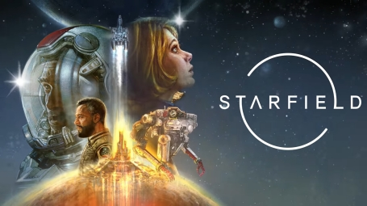
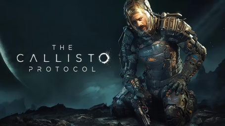
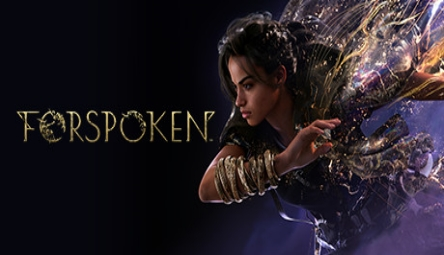

Últimos videojuegos para PC
-

Starfield
Un videojuego de rol de acción de mundo abierto desarrollado por Bethesda Game Studios y publicado por Bethesda Softworks. Fue lanzado para Microsoft Windows y Xbox Series X/S el 11 de noviembre de 2022.
-

The Callisto Protocol
Un videojuego de terror y supervivencia desarrollado por Striking Distance Studios y publicado por Krafton. Fue lanzado para Microsoft Windows, PlayStation 4, PlayStation 5, Xbox One y Xbox Series X/S el 2 de diciembre de 2022.
-

Forspoken
Un videojuego de rol de acción desarrollado por Luminous Productions y publicado por Square Enix. Fue lanzado para Microsoft Windows y PlayStation 5 el 24 de mayo de 2023.
Venta de videojuegos para PC
Starfield
Precio: $69,99
The Callisto Protocol
Precio: $59,99
Forspoken
Precio: $59,99